|
|
| sea stars text index | photo index |
| Phylum Echinodermata > Class Stelleroida |
| Sea
stars Subclass Asteroidea updated Apr 2020
Where seen? Sea stars are encountered on most of our shores. Even the most "beat up" shore will have some kind of sea star. But our Northern shores appears to have the richest variety of sea stars. Some sea stars are small and well hidden. Others are large and colourful. What are sea stars? Although often called starfish, these creatures are not fish at all! So it is more correct to call them sea stars. Sea stars belong to the Phylum Echinodermata and Subclass Asteroidea. There are about 1,800 known species of sea stars, of which about 300 are found in shallow waters. Sea stars form the second largest group of Echinoderms after the brittle stars (Subclass Ophiuroidea). Features: Almost everyone knows what a sea star looks like! 'Asteroidea' means 'star-like'. Like other echinoderms, sea stars are symmetrical along five axes, have a spiny skin and tube feet. |
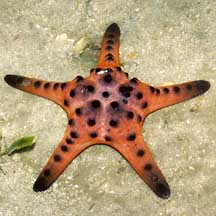 The large Knobbly sea star is an icon of Chek Jawa. Chek Jawa, Jun 05 |
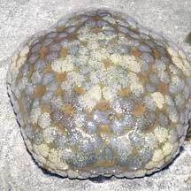 The Cushion star is more pentangonal than star shaped. Terumbu Ular, Apr 06 |
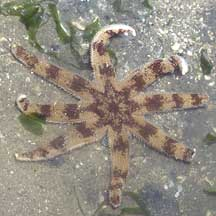 The Eight-armed sand starhas more than five arms. Chek Jawa, Jul 07 |
| An Armful: Sea stars have arms
that blend into one another before joining the central disk. Some
sea stars seem to be all arms with long narrow arms and a small central
disk. Others have arms that are so short they look like pentagons.
Most species of sea stars have five arms, although some may have more.
However, sometimes, you might come across a sea star with fewer than
five arms. Some kinds of sea stars are really flat, others may have
more cylindrical arms, and some are so round that they look like cushions.
Each arm is usually tipped with one or more sensory tube feet, and
an eye spot that detects light and dark but does not form an image. Sometimes confused with brittle stars. Unlike sea stars, brittle stars have very flexible and long arms attached to a small central disk. Most brittle stars are much smaller than sea stars, although some have very long arms. Handicapped Stars: Sea stars are famous for their ability to regenerate lost arms. But this takes time and resources. Some species take up to a year to replace a lost limb. In the meantime, the sea star is probably disadvantaged. If the central disk is damaged, the sea star may die. Only a few species of sea stars are known to regenerate from a piece of an arm. So you won't necessarily get two sea stars when an arm of a sea star is separated. So please don't purposely mutilate sea stars. |
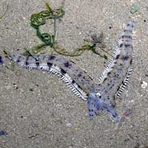 Common sea star regenerating new arms. Tanah Merah, Oct 09 |
 Three arms regenerating on a Plain sand star. Pasir Ris Park, Jul 08 |
 This Plain sand star has 4 instead of 5 arms. Changi, Aug 08 |
| Mouth to the ground: The mouth
is on the underside facing the ground. Some sea stars have jaws made
up of five or more teeth arranged in a star around the mouth. Some
sea stars can extend their stomachs out of their mouths! Part of the
digestive system of a sea star extends into its arms. Not all sea stars have an anus. Those that don't, spit out indigestible bits through their mouth. In those that do, the anus is on the upper surface of the central disk. In the groove: Radiating from the mouth and extending under each arm are grooves (ambulacral grooves). These grooves usually contain 2-4 rows of tube feet. The margins of the groove are guarded by moveable spines that can close over the groove. Out of the water, a sea star will usually retract its tube feet into the grooves so it looks rather lifeless. |
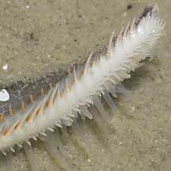 Long pointed tube feet of the Sand star helps it move quickly over the sand. Chek Jawa, Apr 05 |
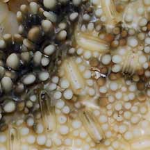 Huge bivalved pedicellaria (pincer-like structures) on the underside of the Cake sea star. Chek Jawa, Jun 04 |
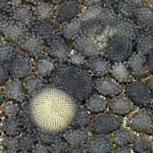 The white structure in the middle of this Common sea star is the madreporite. Pulau Hantu, Jun 09 |
| Fancy footwork: Sea stars use
their tube feet to move around. Unlike brittle stars, sea stars move
mainly by undulating waves of their tube feet and not by bending their
arms. Sea stars appear to have special glands in their tube feet that
secrete a glue so the feet stick to things, and another substance
to release the tube feet. In some sea stars, the tube feet ends in
suckered disks. These act like suction cups when pressure is applied
by the sea star. Burrowing sea stars may have suckerless tube feet
that end in points to better dig into the ground. Sea stars also use
their tube feet to manipulate food. Some sea stars also breathe through
their tube feet! Skin and bones: Sea stars have an internal (not extenal) skeleton. A sea star's body is made up of tiny ossicles (plates made mostly of calcium carbonate), connected by a special kind of connective tissue called 'catch connective tissue'. This connective tissue can rapidly change from almost liquid to rock hard and allows them to slowly bend and move their arms to climb, right themselves and clasp prey. Sea stars can also purposely drop off an arm when stressed or attacked, by rapidly changing the consistency of this tissue. The entire sea star has a skin that covers all of the body, including the spines. Jaws all over the body! Some sea stars also have tiny structures called pedicellariae that look like a pair of jaws, or tiny clams. The main function of these is to keep the body of the sea star free of parasites, encrusting organisms and debris. These little jaws can snap and those on big sea stars can even pinch inquisitive human fingers! Pedicellariae may also be used to collect food. Water of Life: Like other echinoderms, sea stars have a water vascular system, a network of internal canals supported and pumped mainly with seawater. They suck seawater into their bodies through the madreporite: a sieve-like structure that usually appears as a spot on the upperside near the centre. By expanding or contracting chambers in the internal system, the water pressure in canals within the body can be directed and changed. This is how they move their tube feet. A study also found that the water within a sea star may help it keep cool when exposed at low tide. As they rely on seawater, it is stressful for sea stars to be left out of water for too long. Try not to remove sea stars from the water. If you have to do so, please return them quickly to where you found them. What do they eat? Some sea stars placidly gather edible bits from the water or surface. But most sea stars are scavengers or carnivores, 'sniffing' out their meal by the chemicals released by the prey or dead animals. Among the more common prey are snails, bivalves, crustaceans, worms and other echinoderms. Some sea stars specialise in a certain prey. Some sea stars feed on sponges, sea anemones and corals. Some carnivorous sea stars eat detritus when there's nothing better to eat. Some prey of sea stars have developed various ways to escape from sea stars. Bivalves such as scallops (Family Pectinidae) may leap, while others burrow away quickly, some snails may somersault. |
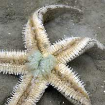 Underside of a Common sea star. Greenish stomach outside the central mouth, tube feet emerging from groove beneath the arms. Chek Jawa, Jan 03 |
 Is this Knobbly sea star eating a sand dollar? Cyrene Reef, May 11 Photo shared by Marcus Ng on flickr. |
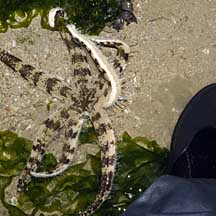 The huge Eight-armed sand star(next to my bootie for scale) is a fast moving predatory sea star. Pulau Sekudu, May 08 |
| Stomach Turning Table Manners: Some sea stars, especially those with long arms, can evert their stomachs.
This ability is particularly useful for carnivorous sea stars that
feed on bivalves. How does it do it? A carnivorous sea star uses its
tube feet to hold the bivalve againsts its central mouth. It then
pushes out its stomach through its mouth and inserts its stomach into
the bivalve's shell through imperfections in the fit of the two shells.
If there are no such imperfections, the sea star simply pulls the
shells apart to create a tiny gap! Once inside the shell, digestive
juices are poured on the hapless victim. Digested material is moved
by cilia (minute hairs) on tracks into the sea star. Thus the prey
is partially digested in its own shell! The Crown-of-Thorns sea star (Acanthaster planci) pushes its stomach out of its mouth to digest coral polyps in their skeletons. Sea stars that eat detritus may push out their stomachs to mop up whatever is on the surface. However, sea stars with short arms usually don't push out their stomachs and simply swallow their prey whole and digest them in their stomachs. What eats them? While some fishes may nibble on adult sea stars, it appears they are not considered tasty by most other animals. |
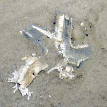 A Common sea star disintegrating, possibly due to flooding and a drop in salinity. Chek Jawa, Jan 07 |
 Recently dead Plain sand star disintegrating. Pasir Ris Park, Jul 08 |
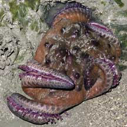 On a hot day, the Knobbly sea star may be contorted. It's attempting to cool off. It is not dying, there is no need to move it. Beting Bronok, Jun 04 |
| Dead or Alive? All the sea stars
that you see are probably alive. You are unlikely to come across a
skeleton of a sea star. Dead sea stars disintegrate quickly and do
not leave behind whole skeletons. A live sea star also has moving
tube feet. When removed from the water, however, sea stars will retract
their tube feet and may appear dead. Don't pick up sea stars! Many sea stars can purposely drop off an arm if it feels threatened. This is how they might escape the jaws of a predator, or if a stone should accidentally trap an arm. If you pick up a sea star by the arm, you may trigger off the same reaction. Also, it is stressful for a sea star to be out of water for a long time. So please admire the sea stars where they are. Should I put a sea star that is high and dry on the sand back into the water? Intertidal sea stars are used to being out of water during low tide. It is best to leave sea stars were they are. Don't make a sea star flip over Not all sea stars can do this easily. Even for those than can, it consumes energy and if the same sea star is made to do this several times, it can exhaust and thus injure the animal. Living with a star: Tiny parasitic snails may live on the upper surface of a sea star, or under their arms. |
 Tiny parasitic snails are sometimes seen on the upperside of a Plain sand star. Changi, Jun 05 |
 Closer look at the snails: laying eggs on the sand star? |
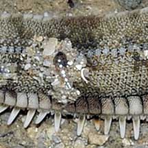 Parasitic snail on a Common sea star . Pulau Hantu, Jul 08 |
| Sea star babies: Sea stars have separate genders and are usually either male or female. Eggs and sperm are stored in their arms. Most species practice external fertilisation, releasing eggs and sperm simultaneously into the water while standing on tip toes. More about this spawning posture on the Echinoblog. Some can produce lots of eggs; a single female may produce millions! Sea stars undergo metamorphosis and their larvae look nothing like the adults. The form that first hatches from the eggs are bilaterally symmetrical and free-swimming, drifting with the plankton. They eventually settle down and develop into tiny sea stars. |
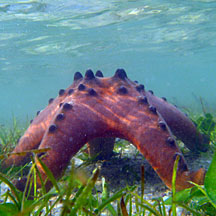 A Knobbly sea star about to spawn? Cyrene Reef, Aug 11 |
 Eight-armed sand star in spawning position? East Coast, Dec 08 |
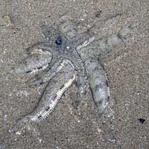 Small Common sea star male on top of larger female, probably about to spawn. Kusu Island, Sep 10 |
| Aren't sea stars bad for reefs? Don't they
eat up all the hard corals? The Crown-of-Thorns sea star
(Acanthaster planci) is notorious for decimating reefs. This
sea star eats the polyps of hard corals leaving behind dead white
skeleton. These sea stars are only a danger to reefs when there is
a population explosion of them. Such a situation is generally is believed
to be due to an imbalance in the natural system. For example, when
their predators are overharvested. When there are low numbers of this
sea star, they do not cause massive damage. This sea star has not
been encountered on our shores. Human uses: Sea stars are generally not eaten, and in fact it is advised not to eat them as many are toxic. There are stories of pets which have eaten sea stars and died. More about this on The Echinoblog. They are also not that popular for the live aquarium trade as they tend to eat their tank-mates. However, in some places, sea stars are harvested alive and dried to be sold as cheap ornaments. This is cruel indeed! In some coastal areas, sea stars are harvested and chopped up as fish meal or fertiliser. Some sea stars are considered pests on mussel, oyster and scallop farms. Status and threats: Many of our sea stars are listed among the threatened animals of Singapore. They have become uncommon in Singapore mainly because of habitat loss due to reclamation or human activities along the coast that affect the water quality. Trampling by careless visitors and overharvesting can also have an impact on local populations. |
| Subclass
Asteroidea recorded for Singapore
from Wee Y.C. and Peter K. L. Ng. 1994. A First Look at Biodiversity in Singapore. *from Lane, David J.W. and Didier Vandenspiegel. 2003. A Guide to Sea Stars and Other Echinderms of Singapore, and Didier VandenSpiegel et al. 1998. The Asteroid fauna (Echinodermata) of Singapore with a distribuion table and illustrated identification to the species. in red are those listed among the threatened animals of Singapore from Ng, P. K. L. & Y. C. Wee, 1994. The Singapore Red Data Book: Threatened Plants and Animals of Singapore **from WORMS
|
Links
|